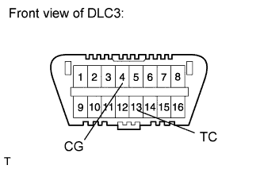
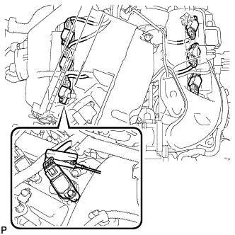
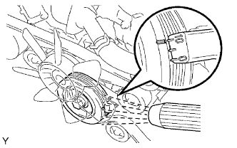
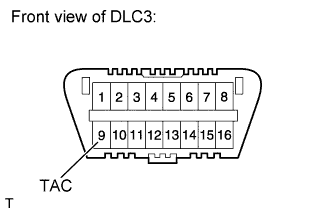
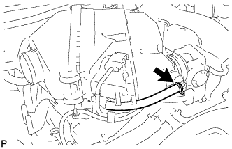
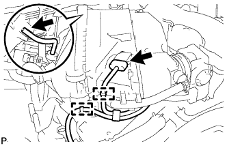
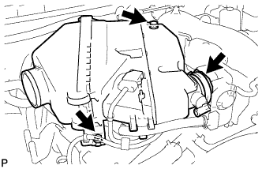
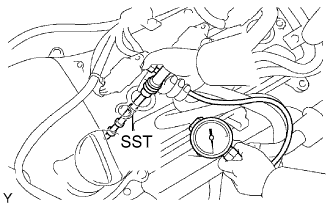
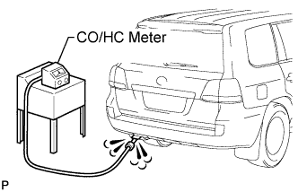

ENGINE > ON-VEHICLE INSPECTION |
| 1. INSPECT IGNITION TIMING |
Warm up the engine.
When using the intelligent tester:
Connect the intelligent tester to the DLC3.
Enter the following menus: Powertrain / Engine and ECT / Data List / All Data / IGN Advance.
Inspect the ignition timing during idling.
Check that the ignition timing advances immediately when the engine speed is increased.
 |
When not using the intelligent tester:
Using SST, connect terminals 13 (TC) and 4 (CG) of the DLC3.
Remove the air cleaner cap.
 |
Pull out the wire harness shown in the illustration.
Connect the tester probe of a timing light to the wire of the ignition coil connector for the No. 1 cylinder.
 |
Inspect the ignition timing during idling.
Remove SST from the DLC3.
Inspect the ignition timing during idling.
Disconnect the timing light from the engine.
Install the air cleaner cap.
| 2. INSPECT ENGINE IDLING SPEED |
Warm up the engine.
When using the intelligent tester:
Connect the intelligent tester to the DLC3.
Enter the following menus: Powertrain / Engine and ECT / Data List / All Data / Engine Speed.
Inspect the engine idling speed.
 |
When not using the intelligent tester:
Connect SST to terminal 9 (TAC) of the DLC3.
Race the engine at 2500 rpm for approximately 90 seconds.
Inspect the engine idling speed.
| 3. INSPECT COMPRESSION |
Warm up and stop the engine.
Drain the engine coolant (Click here).
 |
Remove the 2 cap nuts and V-bank cover.
Loosen the clamp and remove the No. 2 air cleaner hose.
 |
Disconnect the ventilation hose.
 |
Disconnect the MAF connector.
Using a clip remover, detach the 2 wire harness clamps.
Disconnect the vacuum hose.
 |
Loosen the hose clamp and remove the 2 bolts and air cleaner.
Remove the intake air surge tank (Click here).
Remove the 6 ignition coils.
Remove the 6 spark plugs.
Disconnect the 6 fuel injector connectors.
 |
Inspect the cylinder compression pressure.
Insert SST (compression gauge) into the spark plug hole (Procedure "A").
While cranking the engine, measure the compression pressure (Procedure "B").
Repeat procedures "A" and "B" for each cylinder.
If the cylinder compression is low, pour a small amount of engine oil into the cylinder through the spark plug hole and repeat procedures "A" and "B" for cylinders with low compression.
Connect the 6 injector connectors.
Install the 6 spark plugs.
Install the 6 ignition coils.
Install the intake air surge tank (Click here).
Install the air cleaner (Click here).
Install the No. 2 air cleaner hose (Click here).
 |
Install the V-bank cover with the 2 cap nuts.
Add engine coolant (Click here).
| 4. INSPECT CO/HC |
Start the engine.
Run the engine at 2500 rpm for approximately 180 seconds.
 |
Insert the CO/HC meter testing probe at least 40 cm (1.31 ft) into the tailpipe during idling.
Immediately check the CO/HC concentration during idling and/or at 2500 rpm.
If the CO/HC concentration does not comply with regulations, perform troubleshooting in the order given below.
Check the A/F sensor operation (Click here) and heated oxygen sensor operation (Click here).
See the table below for possible causes, and then inspect and correct the corresponding causes if necessary.
| CO | HC | Symptom | Causes |
| Normal | High | Rough idling |
|
| Low | High | Rough idling (Fluctuating HC reading) |
|
| High | High | Rough idle (Black smoke from exhaust) |
|